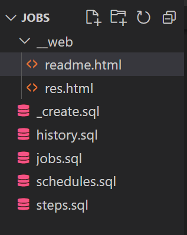

Jobs are tools to automate tasks. SQL Server Job feature provides a quick and reliable way of setting up automated processes. With SQL Server jobs, we can easily use tables to serve as messages queues, and use tables to record execution logs and track job execution history.
With a SQL Server instance, this application contains scripts for:
The application structure
